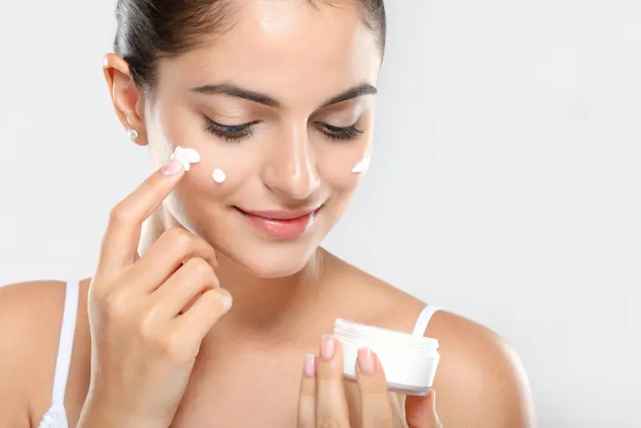
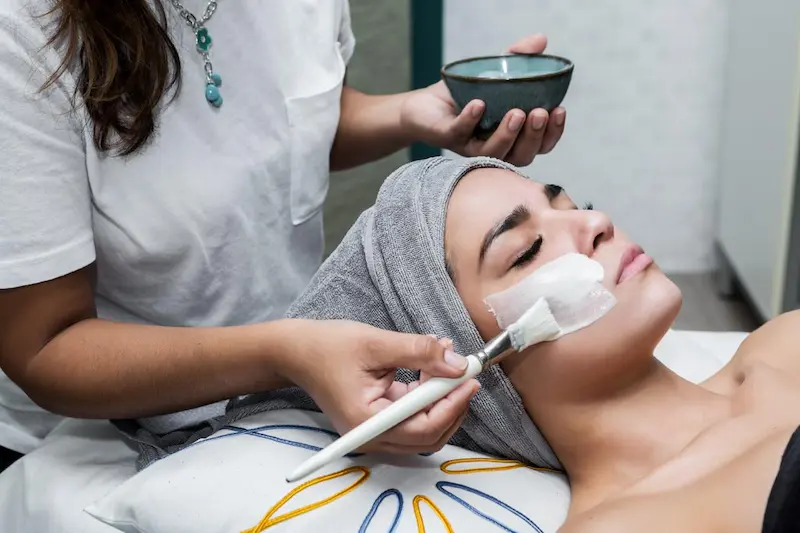
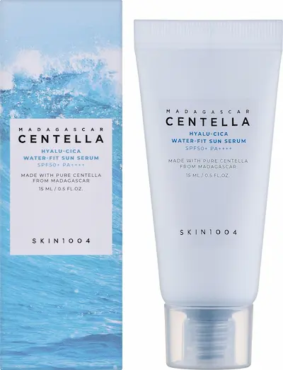
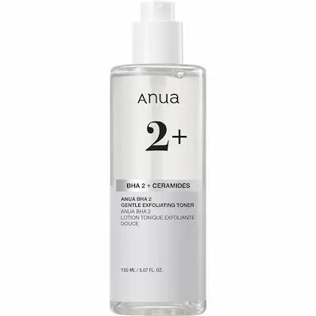
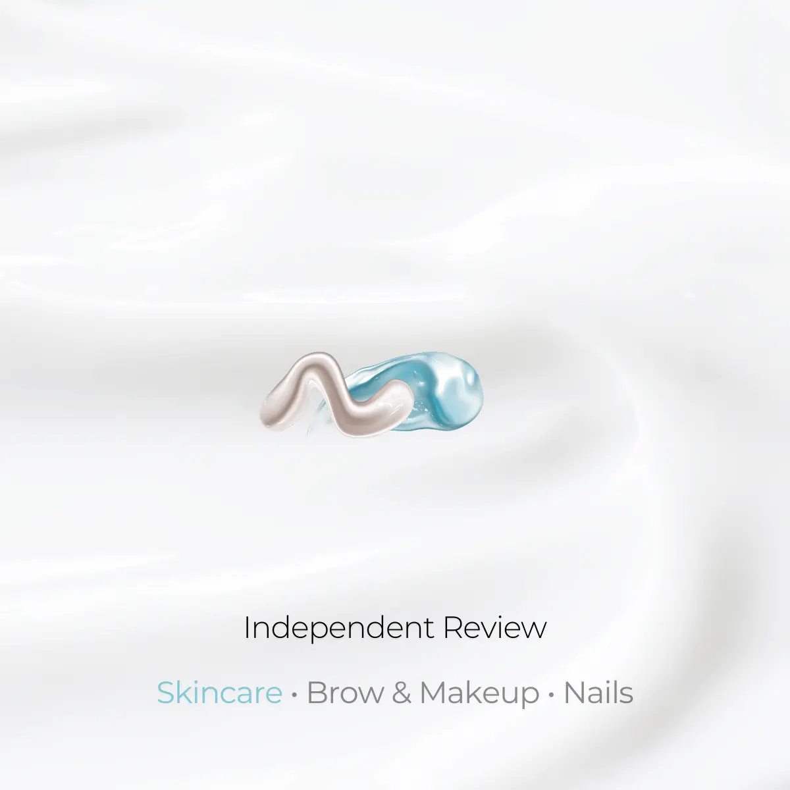
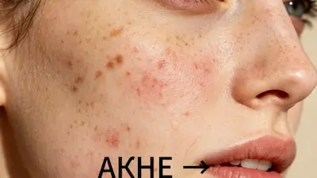

Акне: причины, уход и эффективные способы борьбы с высыпаниями
Разберёмся, почему появляется акне, какие ингредиенты используются в уходе за проблемной кожей, как подобрать средства и что делать, чтобы снизить риск появления постакне.
Посмотреть услугиНе уверены, какое средство выбрать?
Если сложно подобрать уходовую или декоративную косметику самостоятельно, вы можете получить персональную консультацию специалиста.
- ✔ Подбор ухода по типу кожи
- ✔ Подбор декоративной косметики
- ✔ Индивидуальные рекомендации
Что такое акне и почему оно возникает?
Акне — это воспалительное заболевание кожи, которое развивается в области сально-волосяных фолликулов. На его появление могут влиять повышенная выработка кожного сала, закупорка пор, изменения процесса обновления клеток кожи и воспалительные процессы.
На развитие акне также могут влиять гормональные изменения и наследственная предрасположенность. Поэтому универсального решения для всех не существует: уход и лечение подбираются с учётом типа высыпаний, состояния кожи и выраженности воспаления.
Акне у подростков и взрослых: есть ли разница?
Акне может появляться как в подростковом возрасте, так и у взрослых. У подростков высыпания часто связаны с гормональными изменениями периода полового созревания. У взрослых акне также может сохраняться или появляться впервые, в том числе на фоне гормональных изменений, наследственной предрасположенности или воздействия некоторых лекарств и косметических средств.
У взрослых кожа при этом может быть одновременно склонной к высыпаниям и чувствительной или сухой. Поэтому слишком агрессивное очищение и большое количество активных средств не всегда являются хорошим решением.
Независимо от возраста важно ориентироваться не только на количество высыпаний, но и на их тип, длительность и реакцию кожи на уход. При глубоких, болезненных воспалениях или появлении рубцов стоит обратиться к дерматологу.
Как подобрать уход в зависимости от типа высыпаний?
При акне не все средства подходят для каждой ситуации. Поэтому при выборе ухода полезно учитывать, какие именно высыпания преобладают и насколько кожа чувствительна.
| Что беспокоит | На что обратить внимание |
|---|---|
| Чёрные точки и закрытые комедоны | Средства с ингредиентами, которые помогают предотвращать закупорку пор, например салициловой кислотой или ретиноидами. |
| Красные воспалённые высыпания | Уход с противовоспалительными и антибактериальными активными ингредиентами, подходящими конкретному типу акне. |
| Акне и чувствительная кожа | Мягкое очищение, регулярное увлажнение и постепенное введение активных средств, чтобы снизить риск раздражения. |
| Пятна после воспалений | Защита от солнца и уход с ингредиентами, которые могут помогать уменьшать выраженность поствоспалительных изменений. |
| Глубокие и болезненные воспаления | Домашнего косметического ухода может быть недостаточно. В такой ситуации лучше обратиться к дерматологу. |
Не обязательно использовать отдельное средство для каждой проблемы. Слишком большое количество активных продуктов может повысить риск сухости и раздражения. Лучше выстраивать уход постепенно и оценивать реакцию кожи.
Как правильно вводить активные ингредиенты в уход?
Даже подходящий для кожи активный ингредиент может вызвать раздражение, если использовать его слишком часто или одновременно с несколькими другими активными средствами. Поэтому при акне важны постепенность и регулярность.
Если средство хорошо переносится, его можно использовать в соответствии с инструкцией. При выраженном раздражении лучше прекратить использование продукта и обратиться за профессиональной рекомендацией.
Акне и чувствительная кожа: как не перегрузить уход?
Проблемная кожа не всегда бывает жирной и устойчивой к активным средствам. При акне кожа может одновременно испытывать сухость, стянутость, покраснение или повышенную чувствительность.
В такой ситуации не стоит пытаться избавиться от высыпаний с помощью постоянного очищения, скрабов или большого количества активных средств. Более разумный подход — сохранить простую базовую рутину и постепенно добавлять необходимые активные ингредиенты.
Для кожи, склонной к акне, при выборе увлажняющего средства можно обратить внимание на обозначения «некомедогенный», «oil-free» или «не закупоривает поры».
Виды высыпаний при акне
Акне может проявляться по-разному. К невоспалительным высыпаниям относятся открытые комедоны (черные точки) и закрытые комедоны. При воспалительной форме могут появляться папулы и пустулы — красные, иногда болезненные элементы с воспалением.
При более выраженном акне могут образовываться глубокие и болезненные узлы и кисты. Такие высыпания повышают риск образования рубцов, поэтому при их появлении стоит обратиться к дерматологу для оценки состояния кожи и подбора подходящего лечения.
Понимание типа высыпаний помогает подобрать уход и не перегружать кожу неподходящими средствами. Важно не выдавливать воспаления самостоятельно, поскольку это может усилить воспаление и увеличить риск следов и рубцов.
Базовый уход за кожей при акне
При акне не обязательно использовать сразу несколько активных средств. Лучше вводить их постепенно и учитывать индивидуальную переносимость кожи.
Активные ингредиенты при акне
| Ингредиент | Для чего используется |
|---|---|
| Салициловая кислота (BHA) | Помогает отшелушивать ороговевшие клетки и очищать поры. Особенно часто используется при комедонах. |
| Азелаиновая кислота | Помогает уменьшать воспаление, воздействовать на высыпания и осветлять тёмные следы, которые могут оставаться после акне. |
| Ретиноиды | Помогают предотвращать закупорку пор и уменьшают воспалительные высыпания. К этой группе относятся, например, адапален и третиноин. |
| Бензоилпероксид | Уменьшает количество бактерий, связанных с акне, и помогает контролировать воспалительные высыпания. |


Выбор ингредиента зависит от типа высыпаний, состояния кожи и переносимости средства. Не стоит вводить сразу несколько активов: чрезмерное количество раздражающих средств может ухудшить состояние кожи.
Подборка средств от BeautyPanda
Редакционная подборка Estetica Lens.
Ниже представлены средства, которые мы рассматриваем в контексте
ухода за кожей, склонной к высыпаниям. Информация о свойствах
продуктов основана на составе и заявленных характеристиках
средства.
Наличие и актуальные условия покупки можно уточнить
непосредственно у
BeautyPanda.


Средства, которые можно рассмотреть при акне
Независимый редакционный обзор.
Информация о продуктах представлена в ознакомительных целях и не
является рекламой или официальной рекомендацией производителя.
При наличии партнёрства ссылка на продавца будет размещена
отдельно и обозначена соответствующим образом.

Чего лучше избегать при акне?
Как уменьшить риск пятен и рубцов после акне?
После воспалений на коже могут оставаться разные следы: красные или коричневатые пятна, а также изменения рельефа кожи — например, атрофические или более плотные рубцы. Это разные состояния, поэтому подход к ним тоже может отличаться.
Чтобы снизить риск появления выраженных следов, старайтесь не выдавливать и не травмировать воспаления. Ежедневная защита от солнца также важна: ультрафиолет может делать некоторые поствоспалительные пятна более заметными.
Для ухода за кожей с поствоспалительными пятнами могут использоваться ингредиенты, такие как азелаиновая кислота и ниацинамид. При стойких изменениях цвета или заметных рубцах стоит обратиться к дерматологу — особенно если следы сохраняются несмотря на регулярный уход.
Влияет ли питание на состояние кожи?
Связь между питанием и акне изучается, но нельзя считать, что какой-либо один продукт является причиной высыпаний у всех. Некоторые исследования предполагают, что продукты с высокой гликемической нагрузкой могут быть связаны с более выраженными проявлениями акне. Также изучается возможная связь между употреблением коровьего молока и высыпаниями.
При этом доказательств пока недостаточно, чтобы рекомендовать строгую диету как самостоятельный способ лечения акне. Не стоит без необходимости исключать целые группы продуктов или резко ограничивать питание.
Если вы замечаете, что определённые продукты регулярно совпадают с ухудшением состояния кожи, можно некоторое время наблюдать за этой закономерностью и вести простой дневник питания и состояния кожи. При этом питание не заменяет подходящий уход и лечение, если они необходимы.
Акне и уход за кожей — Estetica Lens
Короткое видео о коже, склонной к акне, и подходе Estetica Lens к эстетическому уходу за кожей.

Часто задаваемые вопросы
Можно ли выдавливать прыщи?
Лучше этого не делать. Выдавливание и постоянное трогание воспалений может усилить раздражение, увеличить воспаление и повысить риск появления тёмных пятен и рубцов. Особенно важно не пытаться самостоятельно выдавливать глубокие и болезненные воспаления.
Когда ждать результат от ухода при акне?
Уход при акне требует времени и регулярности. Первые заметные изменения могут появиться примерно через 4–8 недель, однако для более выраженного улучшения может потребоваться несколько месяцев. Не стоит менять средства каждые несколько дней, если они не вызывают раздражения.
Нужно ли сушить жирную кожу спиртовыми средствами?
Нет. Агрессивные спиртовые лосьоны и другие раздражающие средства могут пересушивать и раздражать кожу. Для жирной кожи лучше выбирать мягкое очищение и подходящий увлажняющий крем, желательно с пометкой «некомедогенный» или «не закупоривает поры».
Можно ли загорать, если у меня акне?
Солнце не является надёжным способом лечения акне. Ультрафиолет может усиливать потемнение следов после воспалений, а некоторые средства для лечения акне повышают чувствительность кожи к солнцу. Поэтому важно использовать солнцезащитное средство широкого спектра с подходящим SPF.
Когда стоит обратиться к дерматологу?
Консультация особенно важна при глубоких и болезненных узлах или кистах, появлении рубцов, выраженном воспалении или отсутствии улучшения после регулярного ухода. Дерматолог может определить тип акне и подобрать лечение с учётом состояния кожи.